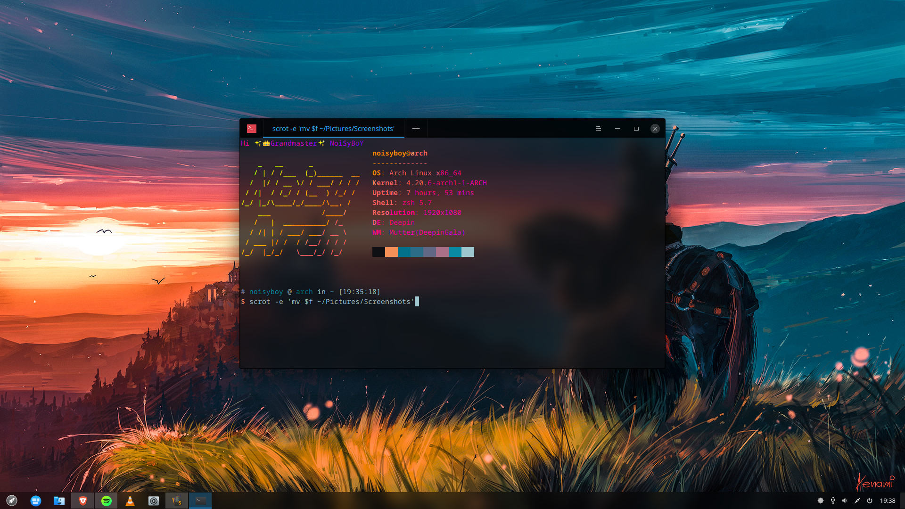
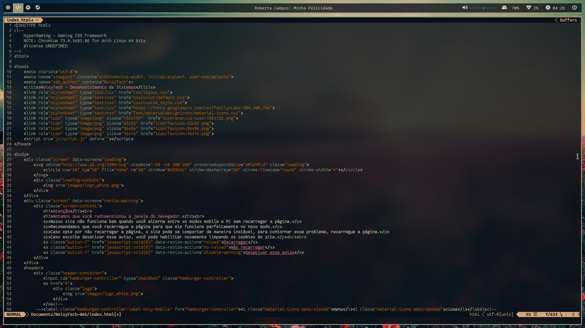
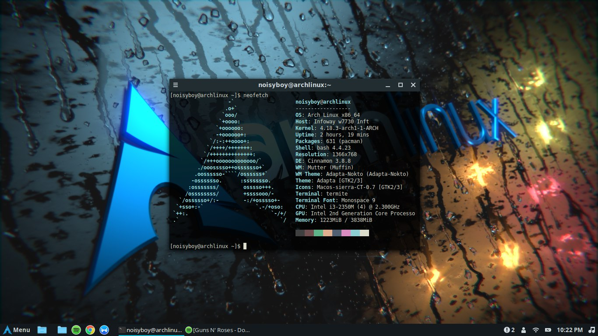
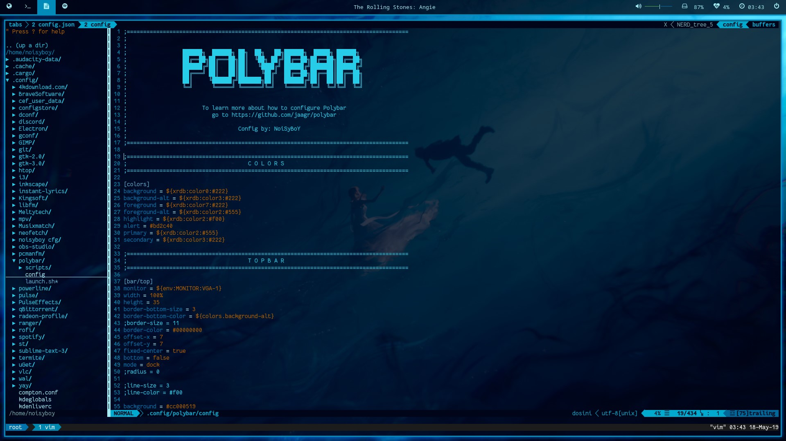

Bem-vindo ao NoisyArch!
A comunidade Linux da liberdade.
Esta comunidade destina-se a ajudar você a instalar e configurar a distribuição Arch Linux em seu Computador.
tudo isto trabalhando a partir da linha de comando, mas isso não exige que você seja um especialista.
Aprendemos muito fazendo e se você quiser saber mais sobre como o linux opera,
o Arch Linux é uma excelente opção por muitas razões.
Deepin Desktop Environment

i3-gaps

Cinnamon

i3wm
